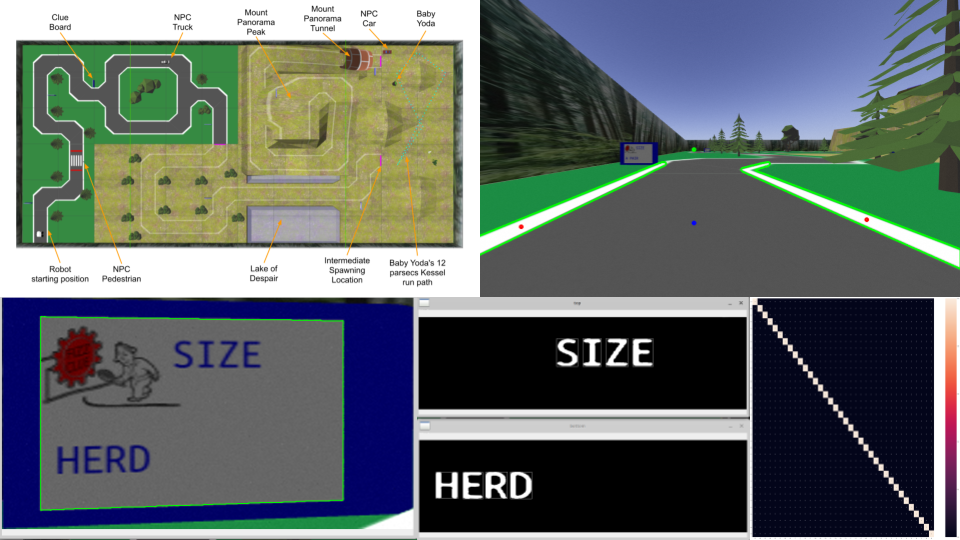

Virtual Self-Driving Car
Project Images
Learning
- ROS software.
- Gazebo simulation environment.
- Machine learning (deep learning, convolutional neural networks, reinforcement learning).
- OpenCV computer vision image processing.
Project Overview:
ENPH 353 is the second project-based course and competition designed for engineering physics students. Over
the
course of one semester, students in groups of 2 are tasked to control a robot using the Robot Operating
System (ROS) software in a Gazebo environment and compete to accomplish several different tasks.
For this year's competition, the robot had to be programmed to autonomously drive around a racetrack while
reading and detecting "clues" placed around the environment.
Through this project, I learned about
and
applied several important topics including:
- using Linux to build and initialize a Gazebo environment with a controllable ROS robot.
- using ROS to create and program several nodes for reading sensor data, motor control, image processing, and a topic subscriber service for communication.
- building a neural network from scratch and training it using gradient descent.
- building a robust convolutional neural network for letter recognition, requiring the generation of thousands of samples for training and validation.
- employing Q-learning to teach a robot how to drive.
For interacting with the Gazebo environment, I used OpenCV to:
- design filtering and masking functions for robot driving.
- employ homography and perspective transforms to process clues.
- design a motion tracking algorithm using binary thresholding and frame deltas.
Attached below is the final report…